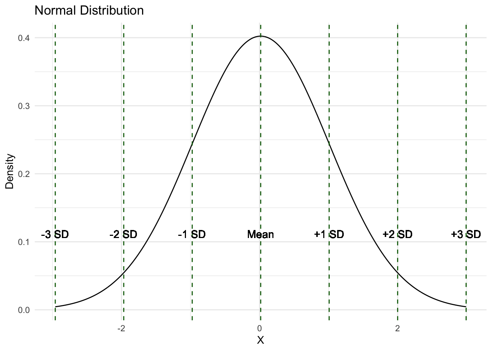
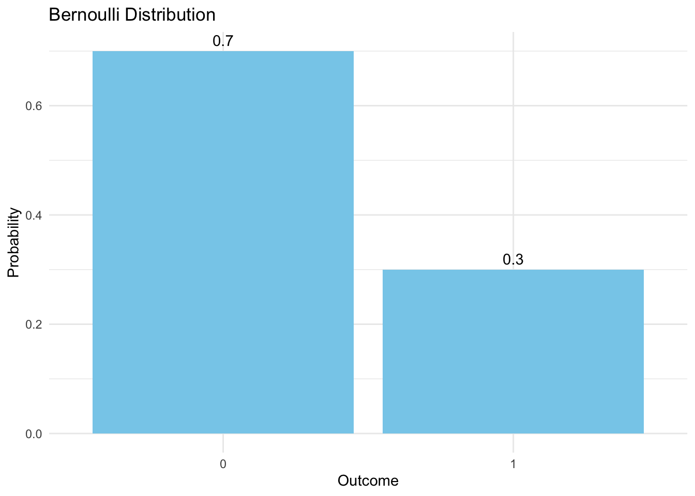

11 Distributions
11.1 The normal distribution
A great number of numerical variables in the world follow the well-known normal (or Gaussian) distribution, which includes test scores, weight and height, among many others.
If a random variable \(X\) is normally distributed, it is determined by the parameters \(\mu\) (the mean) and \(\sigma\) (the standard deviation). Formally, we can summarise this using the notation
\[ X \sim N(\mu, \sigma^2).\] The probability density function (PDF) of the normal distribution has a characteristic bell-shape. The density values on the \(y\)-axis indicate the likelihood of encountering a specific value of \(X\) (cf. Winter 2020: 56; Heumann, Schomaker, and Shalabh 2022: 173-177).
11.1.1 Bernoulli distribution
The Bernoulli distribution is a discrete probability distribution for random variables which have only two possible outcomes: “positive” (often coded as 1) and “negative” (often coded as 0). Examples of such variables include coin tosses (heads/tails), binary response questions (yes/no), and defect status (defective/non-defective).
If a random variable \(X\) follows a Bernoulli distribution, it is determined by the parameter \(p\), which is the probability of the positive case:
\[ X \sim Bernoulli(p).\] The probability mass function (PMF) of the Bernoulli distribution is given by: \[ P(X = x) = \begin{cases} p & \text{if } x = 1 \\ 1 - p & \text{if } x = 0 \end{cases} \]
where \(0 \leq p \leq 1\). This function shows the probability of \(X\) taking on the value of 1 or 0 (cf. Heumann, Schomaker, and Shalabh 2022: 162-163).

Extensions
A Bernoulli experiment presupposes a single trial (e.g., tossing a coin once). If we are interested in the distribution of a binary discrete variable over \(n\) Bernoulli trials, we can describe it in terms of the binomial distribution (Heumann, Schomaker, and Shalabh 2022: 163-166).
Categorical variables with more than 2 outcomes and \(n\) Bernoulli trials can be modelled using the multinomial distribution (Heumann, Schomaker, and Shalabh 2022: 167-169).